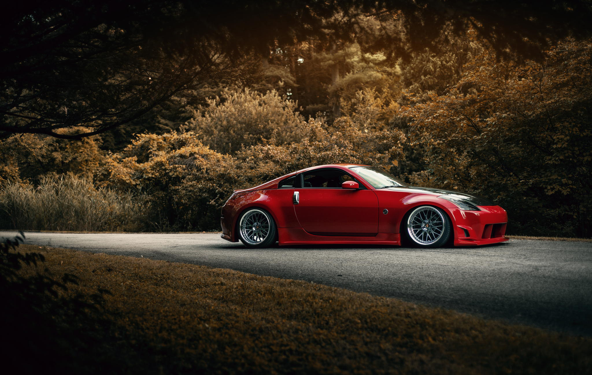
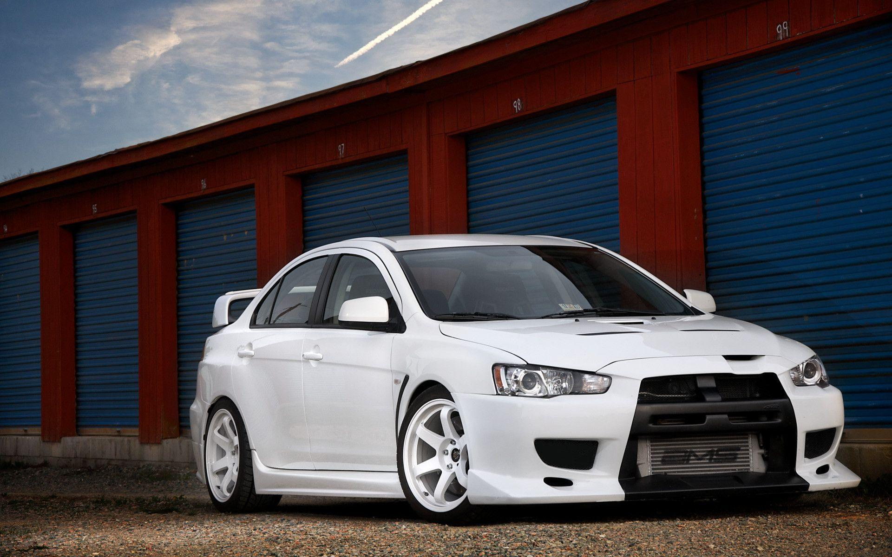
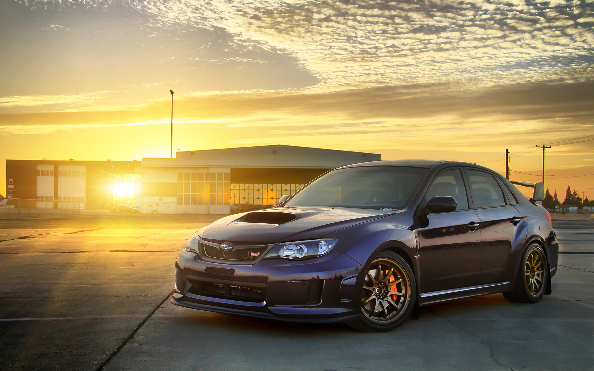
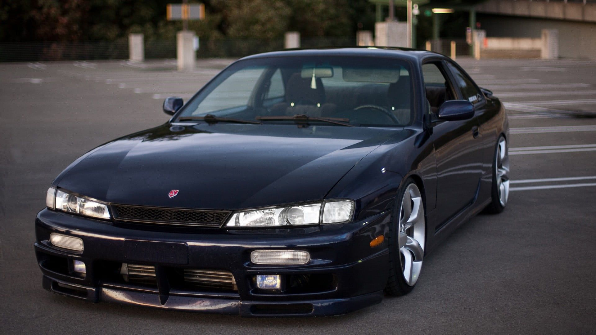

DRIVE2PARADISE - 08/06
VOTE NO SEU PREFERIDO

Nissan 350Z - Tiago Romano
Motor: 3.5 V6 Aspirado
Rodas: BBS CH-R
Preparação: Coletores, Comando e Escape
Suspensão: KS Suspension

Lancer Evolution X - Diego Higa
Motor: 2.0L Turbo
Rodas: Volks Racing TE37
Preparação: Stage 2 - Remap, Downpipe e Escape
Suspensão: Bilstein B14

Subaru Impreza STI - Ricardo Pereira
Motor: 2.5 Boxer Turbo
Rodas: Advan Racing D130
Preparação: Stage 4 - Turbina TD45, Motor Forjado e Escape
Suspensão: KS Suspension

Nissan 350Z - Tiago Romano
Motor: 2.5L Turbo
Rodas: OZ Racing Ultrallegera
Preparação: Stage 3 - Turbina GT550, Remap, Downpipe e Escape
Suspensão: Bilstein B16

Nissan 350Z - Tiago Romano
Motor: 2.5L 6cc Turbo
Rodas: Volks Racing RT67
Preparação: Stage 3 - Turbina IHI T70, FT Injection e Escape
Suspensão: KS Suspension